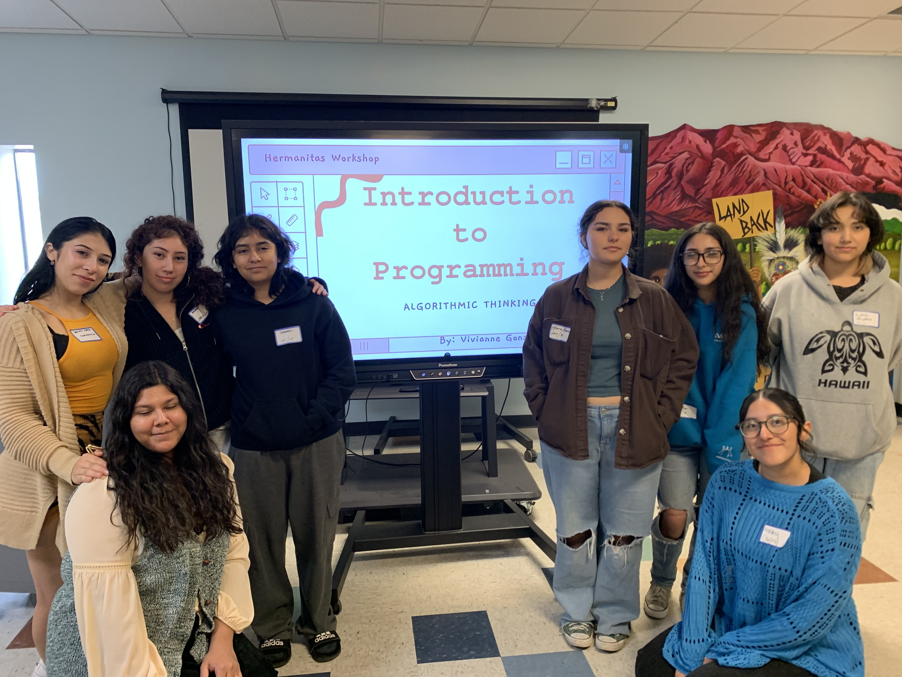

Vivianne Gonzalez
Home
Bridging Programming Concepts and AI: Workshop Planning and Reflection
March 15th, 2025
How the Idea Started
When planning our workshop for our highschool mentees, I had two main aims: to spark programming interest in Latina highschool girls and to help develop problem-solving skills that are applicable across various fields. To achieve this, I broke these aims down into manageable steps, creating a structured and engaging experience for our Hermanitas (little sisters).
Formulating this workshop took an entire semester. As a former Hermanita, I reflected on my early days of learning to code and asked myself: How could I have understood it better back then?
I remembered the challenge of simply learning the language itself. Through my research into the history of computer science, I discovered Seymour Papert, a computer scientist and educator at MIT who was a pioneer of both AI and the constructionist movement in education. He first coined the term Computational Thinking in the 1980s, describing it as a framework designed to algorithmically solve complicated problems.
Inspired by Papert’s work and later expanded upon by Jeanette Wing, I recognized that computational thinking is a fundamental skill for everyone, not just computer scientists. While searching for non-programming examples, I settled on the analogy: "Algorithms are like baking a cake." This simple comparison helped bridge the gap between abstract concepts and real-life experiences.

Structuring Our Presentation
The workshop guided the Hermanitas from abstract concepts to concrete implementations. We started by teaching them how to think like programmers through algorithmic thinking. As an engaging icebreaker, the girls worked in groups to sort themselves based on their birthdays and follow array sorting rules. They effectively acted out a sorting algorithm with the help of our peer mentor, directing how it looks to loop through an array. This hands-on activity demonstrated how breaking down tasks into steps is essential to programming and give the girls an idea of how array stores data and loops through each index.
Connecting Algorithmic Thinking to Code
Next, we translated the sorting activity into code using AI tools. We incorporated this step for two reasons:
1. To show how listing steps to solve a problem is reflected in code format, even when students might not know the specific syntax.
2. To open a discussion about how students can use AI tools like ChatGPT in their day-to-day learning.
A CS student peer member and I critiqued the AI-generated code, providing a live demonstration of the output. While the generated code produced the correct results, we highlighted that it was unnecessarily complicated given the simplicity of the sorting technique the students had developed. This demonstration allowed us to introduce the idea that while AI is a powerful tool, understanding problem-solving fundamentals is key to recognizing better, more efficient approaches.
Wrapping Up: Why Algorithmic Thinking Matters
To conclude, we emphasized why algorithmic thinking is essential beyond the realm of programming. It is a critical tool for everyday life, from designing a cake recipe to planning a daily schedule. Developing problem-solving skills prepares students to navigate an AI-driven world with confidence.
Final Thoughts
I firmly believe that when students are equipped with strong problem-solving skills, they become less likely to overly rely on AI. By teaching them to reflect on current technology uses and encouraging them to think critically about solutions, we empower them to thrive in an evolving technological world
This workshop was a step toward that goal, and the experience taught us valuable lessons about how to better engage students with programming concepts and AI tools in meaningful, practical ways.